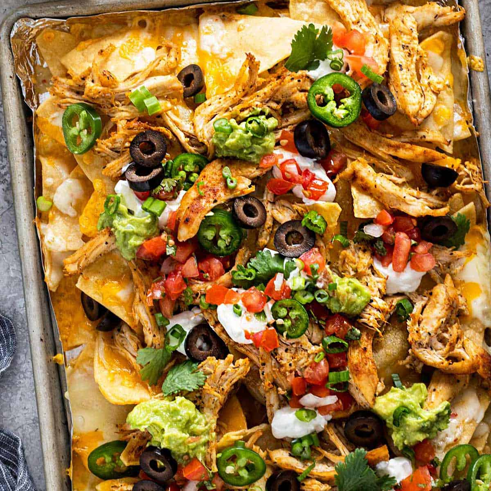

Easy Tasty Nachos

Description
A quick delicious meal that is easy to assemble. One of my favorite comfort foods!
Ingredients
- 1 bag of desired tortilla chips
- cooked chicken breast or thighs
- copious amount of mexican cheese blend (1 large bag)
- 1 small can sliced olives
- 1-2 stems of green onion
- 1 tbsp lightly chopped cinlantro
- tomato (diced)
- sliced jalapeno (fresh or pickled)
- sour cream
- guacamole
- salsa
Steps
- Line a baking sheet with aluminum foil (for easy cleanup).
- Spread tortilla chips on baking sheet as evenly as possible.
- Sprinkle olives, jalapeno, and green onions over the chips.
- Sprinkle cheese over the chips. The more the better!
- Sprinkle more olives, jalapeno, and green onions over cheese.
- Set oven to broil (500 degrees). Place on middle rack and watch. Should only take a few minutes.
Remove from oven when cheese is melted and chips are lightly toasted on edges of pan.
- Sprinkle diced tomato and chopped cilantro on top of nachos.
- Add guacamole and sour cream on top or have on the side.
- Don't forget the salsa and enjoy!